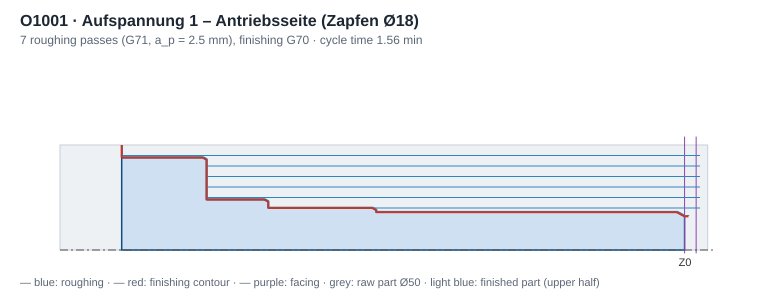

CNC turning program and setup sheet: pinion shaft z = 20, m = 2CNC-Drehprogramm und Einrichteblatt: Ritzelwelle z = 20, m = 2
The pinion shaft from my spur-gear reducer (42CrMo4+QT, raw part Ø50 × 110 mm) is turned on a 2-axis CNC lathe in two setups before gear hobbing. I wrote the NC programs (ISO/DIN 66025, Fanuc dialect), the setup sheet and the toolpath check, and calculated the cycle time – then compared it with the main-time estimate from the process plan.Die Ritzelwelle aus meinem Stirnradgetriebe (42CrMo4+QT, Rohteil Ø50 × 110 mm) wird vor dem Wälzfräsen auf einer 2-Achs-CNC-Drehmaschine in zwei Aufspannungen bearbeitet. Ich habe die NC-Programme (ISO/DIN 66025, Fanuc-Dialekt), das Einrichteblatt und die Werkzeugwegprüfung erstellt und die Taktzeit berechnet – und mit der Hauptzeit-Abschätzung aus dem Arbeitsplan verglichen.

TaskAufgabe
PartBauteil
- Pinion shaft z = 20, m = 2 from the spur-gear reducer projectRitzelwelle z = 20, m = 2 aus dem Stirnradgetriebe-Projekt
- Material 42CrMo4+QT, raw part Ø50 × 110 mmWerkstoff 42CrMo4+QT, Rohteil Ø50 × 110 mm
- 2-axis CNC lathe, two setups, before gear hobbing2-Achs-CNC-Drehmaschine, zwei Aufspannungen, vor dem Wälzfräsen
DeliverablesErgebnisse
- NC programs O1001 and O1002NC-Programme O1001 und O1002
- Setup sheet (Einrichteblatt)Einrichteblatt
- Toolpath check and cycle timeWerkzeugwegprüfung und Taktzeit
- Cross-check against the process plan (Arbeitsplan)Abgleich mit dem Arbeitsplan
Setup sheetEinrichteblatt
| Setup 1 – O1001 (drive side)Aufspannung 1 – O1001 (Antriebsseite) | Setup 2 – O1002 (bearing side)Aufspannung 2 – O1002 (Lagerseite) | |
|---|---|---|
| ClampingSpannmittel | 3-jaw chuck on raw Ø50, stick-out 80 mmDreibackenfutter auf Rohteil Ø50, Ausspannlänge 80 mm | soft jaws on the Ø18 journal + live centreweiche Backen auf Zapfen Ø18 + mitlaufende Reitstockspitze |
| Workpiece zeroWerkstücknullpunkt | finished end face, Z0fertige Stirnfläche, Z0 | finished end face, Z0fertige Stirnfläche, Z0 |
| ContourKontur | Ø18 k6 × 40 (1 × 45° chamfer), Ø20 k6 × 14, Ø24 × 8, Ø44 h11 (gear blank)Ø18 k6 × 40 (Fase 1 × 45°), Ø20 k6 × 14, Ø24 × 8, Ø44 h11 (Radrohling) | Ø20 k6 × 14, Ø24 × 8, Ø44 h11 (overlap 2 mm)Ø20 k6 × 14, Ø24 × 8, Ø44 h11 (Überlappung 2 mm) |
| T01 | CNMG 120408, facing and roughing: vc = 180 m/min, f = 0.3 mm (facing 0.2 mm), ap = 2.5 mmCNMG 120408, Plandrehen und Schruppen: vc = 180 m/min, f = 0,3 mm (Plandrehen 0,2 mm), ap = 2,5 mm | |
| T03 | VNMG 160404, finishing: vc = 220 m/min, f = 0.1 mmVNMG 160404, Schlichten: vc = 220 m/min, f = 0,1 mm | |
| Speed limitDrehzahlbegrenzung | G50 S3000 (constant cutting speed G96)G50 S3000 (konstante Schnittgeschwindigkeit G96) | |
| CoolantKühlschmierstoff | emulsion (M08)Emulsion (M08) | |
Finishing allowance from G71: U = 0.4 mm (on diameter), W = 0.1 mm.Schlichtaufmaß aus G71: U = 0,4 mm (im Durchmesser), W = 0,1 mm.
NC programsNC-Programme
- FacingPlandrehen – two passes with the G94 facing cycle.zwei Schnitte mit dem Plandrehzyklus G94.
- RoughingSchruppen – stock removal with the G71 roughing cycle along the contour N10–N20.Zerspanung mit dem Schruppzyklus G71 entlang der Kontur N10–N20.
- FinishingSchlichten – G70 along the same contour – the contour is described once and used for roughing and finishing.G70 entlang derselben Kontur – die Kontur wird einmal beschrieben und für Schruppen und Schlichten genutzt.
Diameter values are programmed in X, feeds are per revolution (G99) and the cutting speed is constant (G96, limited by G50 S3000). Start of program O1001:Durchmesserwerte werden in X programmiert, Vorschübe pro Umdrehung (G99), die Schnittgeschwindigkeit ist konstant (G96, begrenzt durch G50 S3000). Anfang von Programm O1001:

Cycle-time calculationTaktzeitberechnung
The cycles were expanded into single moves. Each roughing pass ends where the contour plus the finishing allowance is reached, and G71 finishes with a final pass along the offset contour.Die Zyklen wurden in Einzelbewegungen aufgelöst. Jeder Schruppschnitt endet dort, wo Kontur plus Schlichtaufmaß erreicht ist, und G71 schließt mit einem Schnitt entlang der versetzten Kontur ab.
| SetupAufspannung | Roughing passesSchruppschnitte | CuttingHauptzeit | RapidEilgang | Tool changeWerkzeugwechsel | TotalGesamt |
|---|---|---|---|---|---|
| O1001 | 7 | 1.36 min | 0.07 min | 0.13 min | 1.56 min |
| O1002 | 7 | 0.73 min | 0.05 min | 0.13 min | 0.90 min |
| Both setupsBeide Aufspannungen | 2.09 min | 2.46 min |
Cross-check with the process planAbgleich mit dem Arbeitsplan
The process plan of the gear reducer estimated 1.97 min main time for the same turning operations with simple formulas. The NC-based value of 2.09 min is 6 % higher. The difference comes from the approach and overrun distances and from the smaller diameters, where the 3000 rpm speed limit lowers the cutting speed. Set-up time and part handling are not included.Der Arbeitsplan des Getriebes schätzte für dieselben Drehoperationen mit einfachen Formeln 1,97 min Hauptzeit. Der Wert aus dem NC-Programm (2,09 min) liegt 6 % höher. Die Differenz kommt von An- und Überlaufwegen und von den kleineren Durchmessern, an denen die Drehzahlbegrenzung auf 3000 1/min die Schnittgeschwindigkeit senkt. Rüstzeit und Teilehandling sind nicht enthalten.
Validation, limitations & next steps on the machineValidierung, Grenzen & nächste Schritte an der Maschine
- The programs were checked with toolpath plots and the cycle-time calculation; a first part on a real machine is the next step.Die Programme wurden mit Werkzeugweg-Plots und der Taktzeitberechnung geprüft; ein erstes Teil auf einer realen Maschine ist der nächste Schritt.
- Check the clamping of setup 2 (soft jaws on the finished Ø18 journal) for concentricity of the bearing seats: target ≤ 0.01 mm run-out, otherwise turn between centres.Spannung in Aufspannung 2 (weiche Backen auf dem fertigen Zapfen Ø18) auf Rundlauf der Lagersitze prüfen: Ziel ≤ 0,01 mm, sonst zwischen Spitzen drehen.
- Simulate the programs in the control or in CAM before the first part, then run the first part with the feed override at 50 %.Programme vor dem ersten Teil in der Steuerung oder im CAM simulieren, dann das erste Teil mit Vorschub-Override 50 % fahren.
- Measure the k6 seats in process; if needed, use a separate finishing pass with tool-wear compensation.k6-Sitze prozessbegleitend messen; bei Bedarf separater Schlichtschnitt mit Verschleißkorrektur.
What I learnedWas ich gelernt habe
- Turning a CAD part and its process plan into executable NC code: clamping concept, zero points, tools and cutting data on one setup sheet.Ein CAD-Bauteil und seinen Arbeitsplan in ausführbaren NC-Code umsetzen: Spannkonzept, Nullpunkte, Werkzeuge und Schnittdaten auf einem Einrichteblatt.
- How canned cycles (G71/G70) reuse one contour description for roughing and finishing.Wie Zyklen (G71/G70) eine Konturbeschreibung für Schruppen und Schlichten wiederverwenden.
- Why a cycle time from the real toolpath differs from a formula estimate: approach/overrun distances and the spindle speed limit at small diameters.Warum eine Taktzeit aus dem echten Werkzeugweg von der Formelabschätzung abweicht: An-/Überlaufwege und die Drehzahlbegrenzung bei kleinen Durchmessern.
Related: the part comes from my spur-gear reducer project (design calculation, SOLIDWORKS model and process plan).Verwandt: Das Bauteil stammt aus meinem Stirnradgetriebe-Projekt (Auslegung, SOLIDWORKS-Modell und Arbeitsplan).